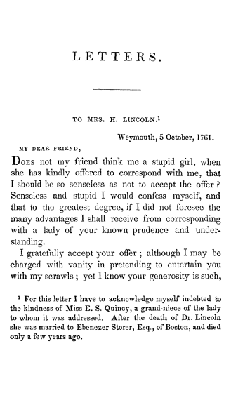
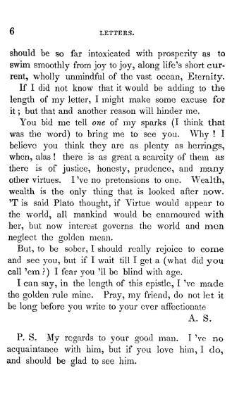

<div1 type="part">
<pb/>
<head>LETTERS.</head>
<div2 type="letter">
<head>TO MRS. H. LINCOLN.<ref target="n1"><sup>1</sup></ref>
<note id="n1" place="foot"><ns><sup>1</sup></ns><p>For this letter I have to acknowledge myself indebted to <lb/>
the kindness of Miss E. S. Quincy, a grand-niece of the lady <lb/>
to whom it was addressed. After the death of Dr. Lincoln <lb/>
she was married to Ebenezer Storer, Esq., of Boston, and died <lb/>
only a few years ago.</p></note>
</head>
<opener>
<dateline>
<name type="place">Weymouth</name>, <date value="1761-10-05">5 October, 1761.</date>
</dateline>
<salute>MY DEAR FRIEND,</salute>
</opener>
<p><smcap>Does</smcap> not my friend think me a stupid girl, when <lb/>
she has kindly offered to correspond with me, that <lb/>
I should be so senseless as not to accept the offer? <lb/>
<!-- etc. -->
<p>I can say, in the length of this epistle, I 've made <lb/>
the golden rule mine. Pray, my friend, do not let it <lb/>
be long before you write to your ever affectionate</p>
<closer>
<signed>A. S.</signed>
<ps>P.S. My regards to your good man. I've no <lb/>
acquaintance with him, but if you love him, I do, <lb/>
and should be glad to see him.</ps>
</closer>
</div2>
<!-- other letters -->
</div1>